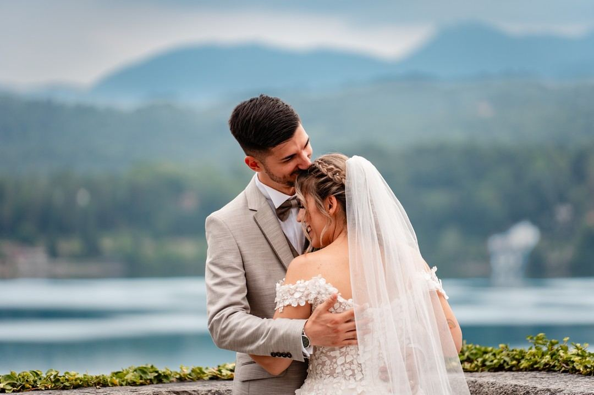
01Matrimonio
Reportage di tutta la giornata, in due, con video, drone, photobooth e polaroid a scelta. Seguiamo un numero limitato di matrimoni all'anno.
Scopri di piu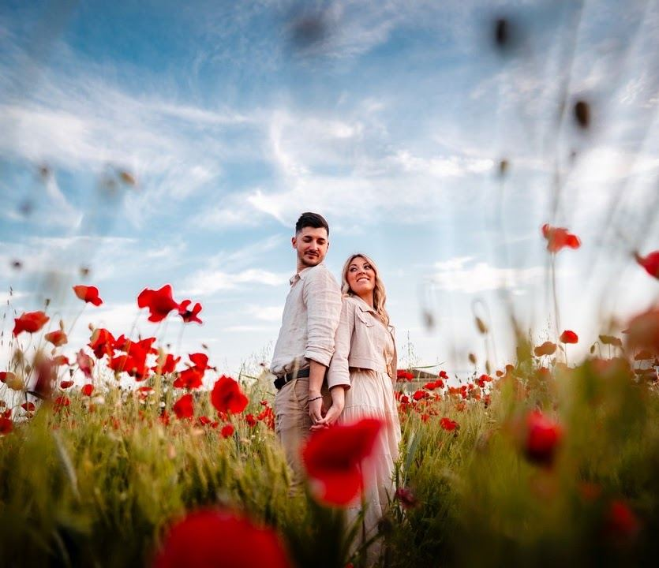
Matrimoni e servizi per la famiglia, dallo scatto alla stampa. Siamo Gaetano e Catalina, e da dieci anni facciamo solo questo.
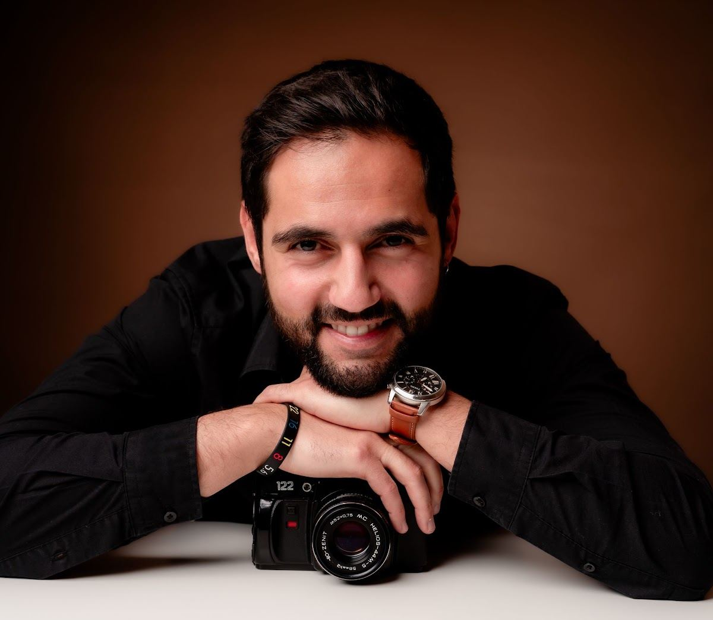
Da ormai dieci anni aiutiamo le persone a custodire con cura i ricordi dei momenti piu importanti della loro vita. Dopo i percorsi di studi abbiamo assecondato la nostra passione lavorando nei villaggi turistici in Messico, Repubblica Dominicana, Italia e Grecia, dove scattavamo centinaia di servizi ogni settimana a persone di tutto il mondo.
Nel 2018, con la convinzione di poter dare molto di piu, nasce Fotoristico: un sogno diventato migliaia di foto ricolme di amore.
In ogni servizio sentiamo come se ci concediate un pezzettino di voi stessi e della vostra intimita. Come fotografi e come persone sentiamo il dovere di trattare con cura un dono cosi prezioso.
L'alternanza tra l'intensita dei matrimoni e la spontaneita dei servizi di famiglia ha affinato il nostro sguardo. E questo il tratto distintivo del nostro studio.
Gaetano e Catalina
Dal pancione al primo compleanno, dalla comunione al matrimonio. Le famiglie tornano da noi, ed e la cosa di cui andiamo piu fieri.

01Reportage di tutta la giornata, in due, con video, drone, photobooth e polaroid a scelta. Seguiamo un numero limitato di matrimoni all'anno.
Scopri di piu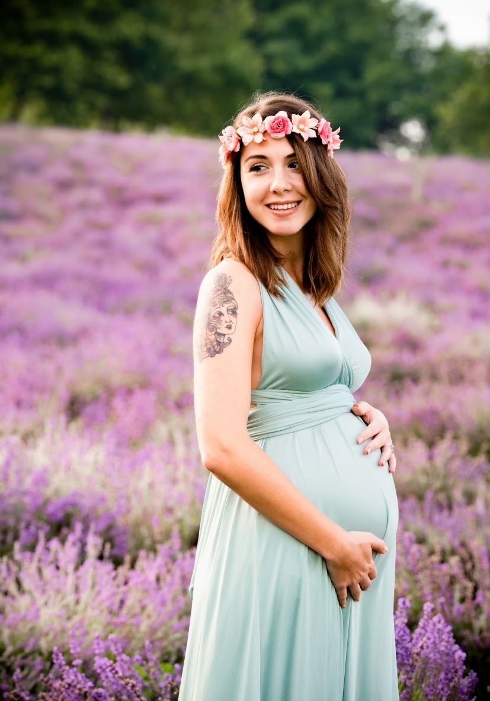
02Nove mesi di attesa, e la protagonista sei tu. In studio con i nostri set, in un ambiente familiare o nella natura, come preferisci.
In studio o in esterna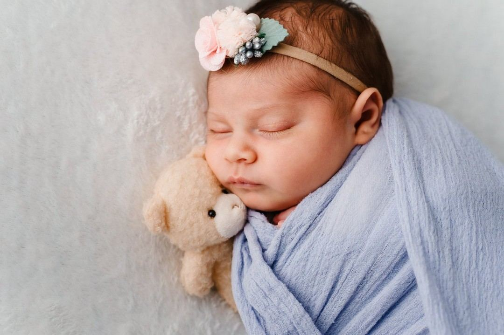
03Di solito entro i primi quindici giorni, quando dorme profondo. Studio caldo e accogliente, tempi del bambino, anche a domicilio.
Da 250 euro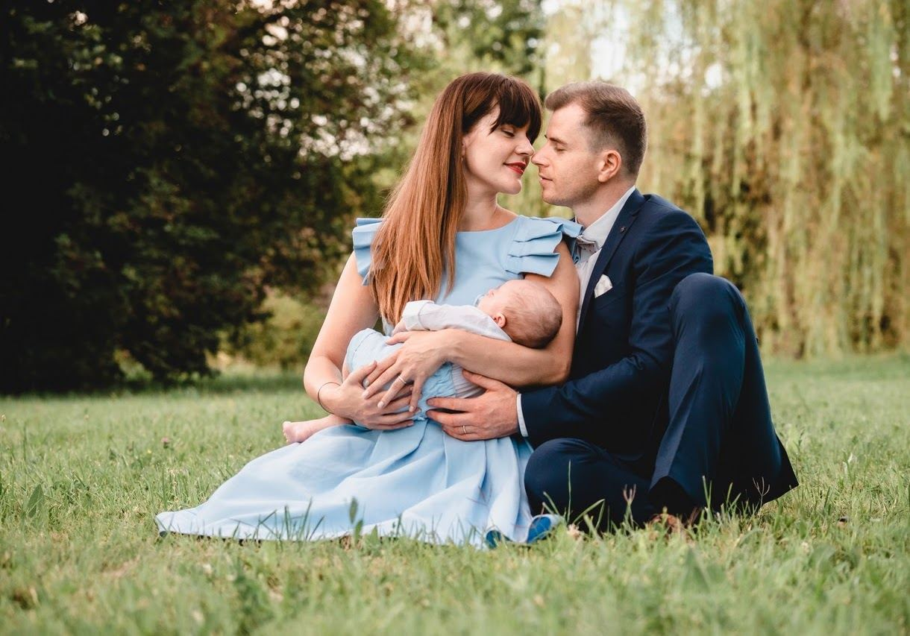
04Preparativi a casa, reportage della cerimonia, foto al ristorante e minibook in location. Anche comunioni e cresime.
Da 400 euro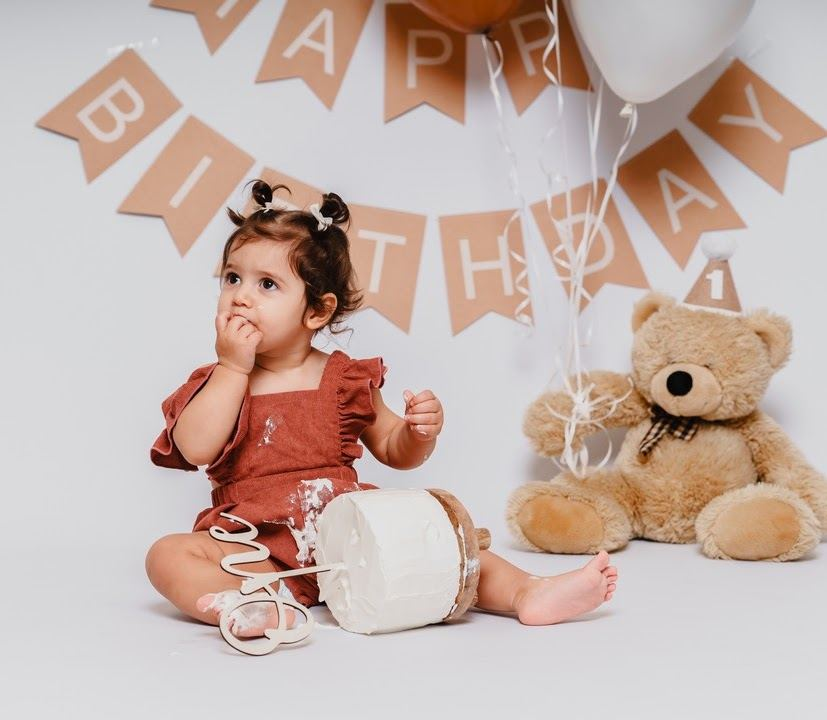
05Il primo compleanno con allestimento personalizzato. Si gioca, ci si sporca, poi il bagnetto con le bolle. Sempre con scatti di famiglia.
Da 200 euro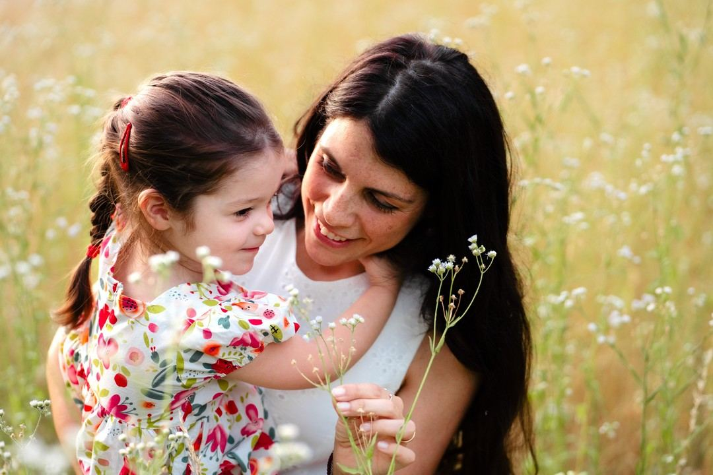
06Al parco, in casa, in studio o per le vie del centro. Non serve una cerimonia per avere le fotografie che avete sempre voluto.
Da 100 euro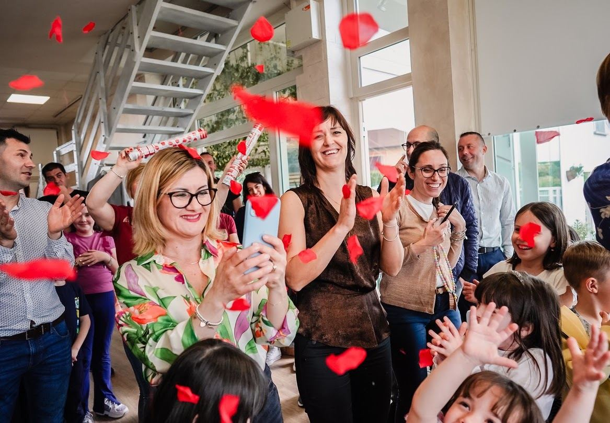
07Compleanni, anniversari, lauree, eventi aziendali. Con galleria online in tempo reale e stampa immediata durante la serata.
Anche per aziende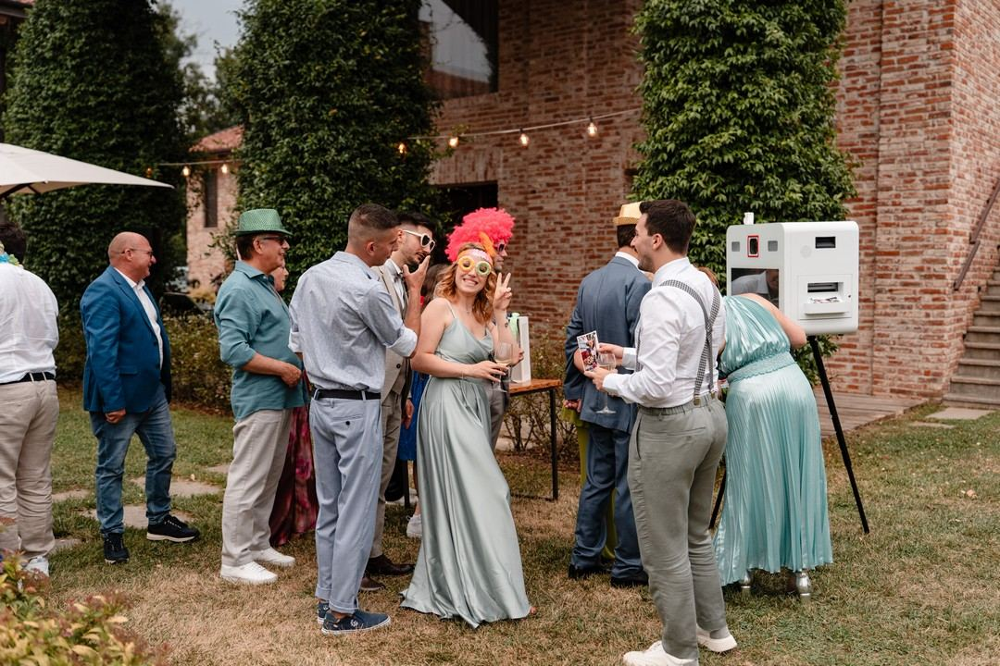
08Sfondi, accessori e stampa al momento. Rompe il ghiaccio in un secondo e ogni ospite porta a casa un pezzetto della festa.
Con il vostro logoFormato conforme per documenti, stampata subito in studio.
Le foto della serata consegnate in mano agli ospiti, gia stampate.
Un servizio fotografico da regalare, valido su tutti i nostri pacchetti.
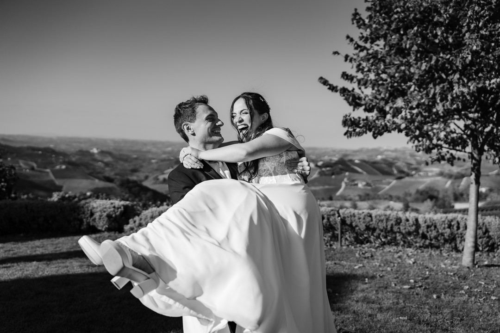
Nei matrimoni cerchiamo l'emozione autentica: quel nodo alla gola o l'eco di una risata che a distanza di anni sapranno farvi rivivere il vostro grande giorno. Vi guidiamo nell'organizzazione perche tutto scorra senza stress.
Presenza garantita. Saremo noi, in prima persona, a seguire il vostro matrimonio. Nessuna sorpresa il giorno stesso.
Niente sequestri di persona. Non sparirete per ore mentre gli invitati vi aspettano al buffet. La festa e vostra.
Un numero limitato all'anno. Cosi possiamo dedicarci interamente a voi, dal primo incontro alla consegna finale.
Tutto quello che serve. Video, drone, photobooth, polaroid in festa e save the date prematrimoniale.
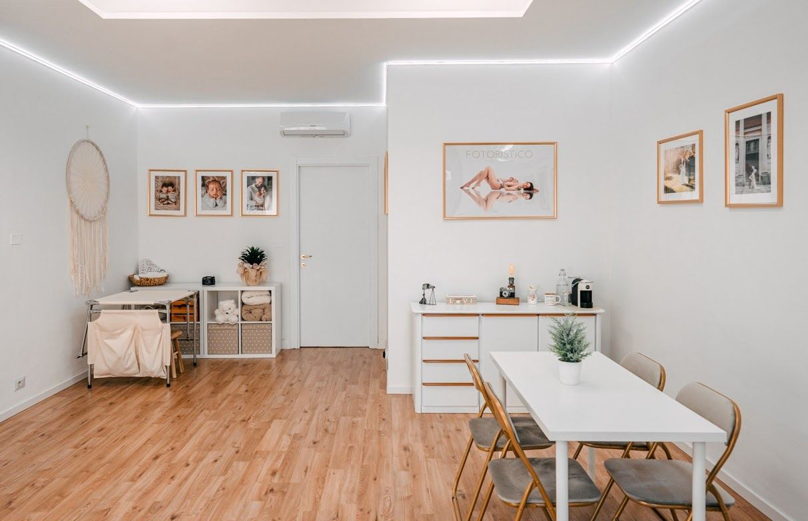
In fase di progettazione volevamo che ogni cliente si sentisse accolto in un ambiente spazioso, semplice ed elegante. Ogni elemento e stato scelto con cura per comunicare l'essenza del nostro stile.
Il locale e climatizzato, cosi la temperatura e sempre giusta in ogni stagione. Durante i servizi copriamo le vetrine per garantire la vostra totale privacy. E non manca un piccolo angolo di caffetteria per una coccola tra uno scatto e l'altro.
Per neonati e servizi lunghi, in ogni stagione.
Privacy totale durante ogni sessione.
Una pausa vera tra un set e l'altro.
Un servizio dal valore di 300 euro, compreso nel pacchetto matrimonio.
Estratti dalle recensioni pubblicate su matrimonio.com e Google. In una versione pubblicata si aggiornano da sole.
Volevamo delle foto spontanee e hanno saputo davvero stupirci. Attenti tutto il giorno, hanno colto anche i dettagli piu curiosi.
Gabriella e Alessandro · matrimonio.comSi sono accostati ai nostri ospiti con grande naturalezza, integrandosi alla perfezione. Hanno colto l'essenza del nostro giorno piu bello.
Michela e Stefano · matrimonio.comCi ha messo a nostro agio con simpatia e discrezione. Le foto ci hanno fatto rivivere le emozioni di quel giorno.
Alessandra e Gianfranco · GoogleScriveteci su WhatsApp o compilate il modulo: vi rispondiamo con un preventivo costruito sulle vostre esigenze, senza impegno.
Corso Cosenza 24B, 10134 Torino
Torino e Piemonte, e ovunque ci sia una storia da raccontare
{kind=link}
{kind=link}
{kind=link}
{kind=link}
{kind=link}
{kind=link}
{kind=link}
{kind=link}
{kind=link}
{kind=link}
{kind=link}
{kind=link}
{kind=link}
{kind=link}
{kind=link}
{kind=link}
{kind=link}
{kind=link}
{kind=link}
{kind=link}